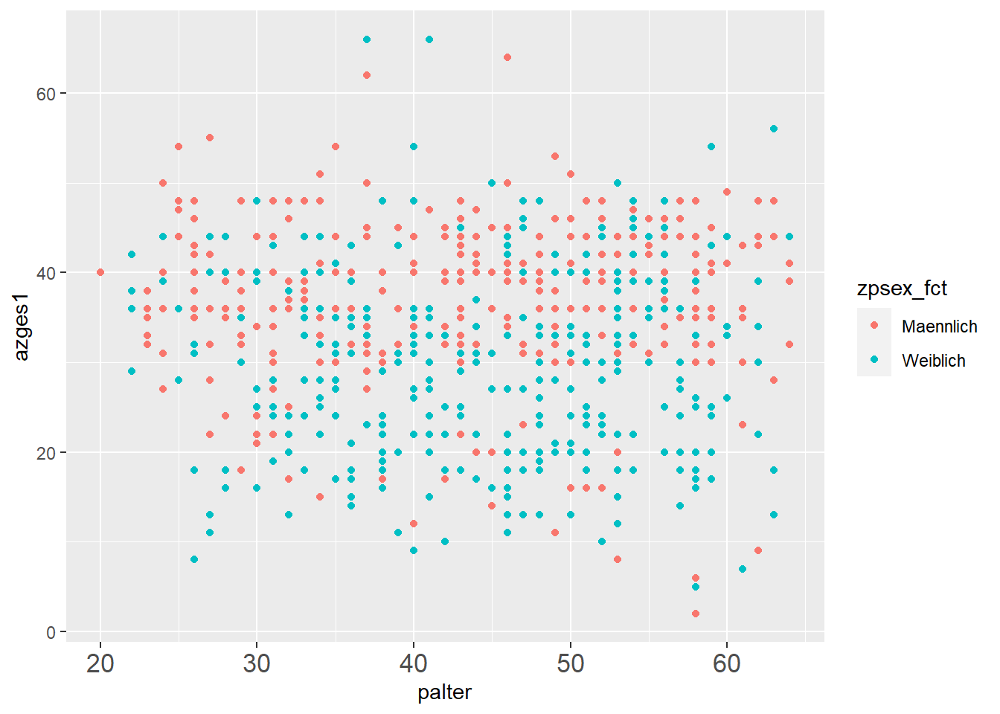

library(tidyverse)
pend_kap5 <- haven::read_dta("./orig/PENDDAT_cf_W13.dta",
col_select = c("pnr","welle", "zpsex", "PSM0100","azges1","palter")) %>%
filter(welle == 8, palter > 0,azges1 > 0)5 Data Wrangling I: Labels & factor
5.1 Labels aus anderen Programmen in R
In vielen Programmen wie Stata oder SPSS werden die labels häufig durch die Operationen “mitgeschleift” und dann ausgegeben. Das ist in R nicht der Fall. Stattdesssen können wir mit Hilfe des Variablentyps factor Labels vergeben. Das Vorgehen mag für alle, die schon lange mit Stata oder SPSS gearbeitet haben, etwas ungewöhnlich sein - ist aber in der Praxis sehr hilfreich, wenn man sich den entsprechenden Workflow angewöhnt hat.
Wenn wir bspw. die Ansicht mit View() öffnen oder eine Auszählung mit count() erstellen, werden uns labels angezeigt:
View(pend_kap5)
pend_kap5 %>% count(zpsex)Diese sind als attributes() Variablen zugeordnet:
attributes(pend_kap5$zpsex)$label
[1] "Steuervariable: Geschlecht des Befragten (aus HHgrid)"
$format.stata
[1] "%42.0g"
$labels
Item in Fragebogenversion nicht erhoben Item in Welle nicht erhoben
-10 -9
Unplausibler Wert Frage irrtuemlich nicht gestellt
-8 -4
Trifft nicht zu (Filter) Keine Angabe
-3 -2
Weiss nicht Maennlich
-1 1
Weiblich
2
$class
[1] "haven_labelled" "vctrs_vctr" "double" …leider machen die attributes() immer wieder Probleme:
library(ggplot2)
ggplot(data = pend_kap5, aes(x = palter, y = azges1, color = zpsex )) +
geom_point()Don't know how to automatically pick scale for object of type
<haven_labelled/vctrs_vctr/double>. Defaulting to continuous.
Don't know how to automatically pick scale for object of type
<haven_labelled/vctrs_vctr/double>. Defaulting to continuous.
Don't know how to automatically pick scale for object of type
<haven_labelled/vctrs_vctr/double>. Defaulting to continuous.Error in UseMethod("rescale"): nicht anwendbare Methode für 'rescale' auf Objekt der Klasse "c('haven_labelled', 'vctrs_vctr', 'double')" angewendetIn den beiden vorherigen Kapiteln haben wir schon gesehen, dass Labels in R immer etwas extra Aufwand bedeuten. In Grafiken mussten wir mit breaks = c(1,2), labels = c("Männer", "Frauen") die Labels extra erstellen.
Wie können wir die Labels attributes() verwenden und so Tipparbeit sparen?
{haven} enthält sich die Funktion as_factor1, mit der wir aus Labels direkt eine factor-Variable erstellen können:
pend_kap5$zpsex_fct <- as_factor(pend_kap5$zpsex)
# ansehen:
pend_kap5 %>% select(contains("zpsex")) %>% head()# A tibble: 6 × 2
zpsex zpsex_fct
<dbl+lbl> <fct>
1 2 [Weiblich] Weiblich
2 2 [Weiblich] Weiblich
3 1 [Maennlich] Maennlich
4 1 [Maennlich] Maennlich
5 2 [Weiblich] Weiblich
6 1 [Maennlich] Maennlichggplot(data = pend_kap5, aes(x = palter, y = azges1, color = zpsex_fct )) +
geom_point()Don't know how to automatically pick scale for object of type
<haven_labelled/vctrs_vctr/double>. Defaulting to continuous.
Don't know how to automatically pick scale for object of type
<haven_labelled/vctrs_vctr/double>. Defaulting to continuous.
5.2 factor selbst erstellen oder bearbeiten
Alternativ können wir auch mit factor() sowie den Optionen levels und labels selber labeln. Die labels werden dann der Reihenfolge nach den Zahlen aus levels zugewiesen.
pend_kap5$zpsex_fct2 <- factor(pend_kap5$zpsex,
levels = c(1,2),
labels = c("Männer","Frauen"))
# ansehen:
pend_kap5 %>% select(contains("zpsex")) %>% head()# A tibble: 6 × 3
zpsex zpsex_fct zpsex_fct2
<dbl+lbl> <fct> <fct>
1 2 [Weiblich] Weiblich Frauen
2 2 [Weiblich] Weiblich Frauen
3 1 [Maennlich] Maennlich Männer
4 1 [Maennlich] Maennlich Männer
5 2 [Weiblich] Weiblich Frauen
6 1 [Maennlich] Maennlich Männer Außerdem wird aus allen nicht angegebenen levels automatisch NA:
attributes(pend_kap5$PSM0100)$label
[1] "Nutzung von sozialen Netzwerken?"
$format.stata
[1] "%39.0f"
$labels
Item in Fragebogenversion nicht erhoben Item in Welle nicht erhoben
-10 -9
Unplausibler Wert Nutzt kein Internet
-8 -5
Frage irrtuemlich nicht gestellt Trifft nicht zu (Filter)
-4 -3
Keine Angabe Weiss nicht
-2 -1
Ja Nein
1 2
$class
[1] "haven_labelled" "vctrs_vctr" "double" pend_kap5 %>% select(PSM0100) %>% head()# A tibble: 6 × 1
PSM0100
<dbl+lbl>
1 2 [Nein]
2 1 [Ja]
3 2 [Nein]
4 -5 [Nutzt kein Internet]
5 -5 [Nutzt kein Internet]
6 -5 [Nutzt kein Internet]pend_kap5$PSM0100_fct <-
factor(pend_kap5$PSM0100,
levels = 1:2,
labels = c("Nutzt soziale Netzwerke","Nutzt keine soziale Netzwerken"))
# Ergebnis ansehen:
pend_kap5 %>% select(contains("PSM0100")) %>% head()# A tibble: 6 × 2
PSM0100 PSM0100_fct
<dbl+lbl> <fct>
1 2 [Nein] Nutzt keine soziale Netzwerken
2 1 [Ja] Nutzt soziale Netzwerke
3 2 [Nein] Nutzt keine soziale Netzwerken
4 -5 [Nutzt kein Internet] <NA>
5 -5 [Nutzt kein Internet] <NA>
6 -5 [Nutzt kein Internet] <NA> Oder wir nutzen die Funktionen aus {forcats} zur recodierung eines factors. {forcats} ist Teil des {tidyverse}. Mit fct_recode() können wir die levels verändern:
levels(pend_kap5$PSM0100_fct)[1] "Nutzt soziale Netzwerke" "Nutzt keine soziale Netzwerken"pend_kap5$PSM0100_fct2 <- fct_recode(pend_kap5$PSM0100_fct,
`Ja, nutzt soziale Netzwerke` = "Nutzt soziale Netzwerke", # bei Leerzeichen `` um die Wörter
)pend_kap5 %>% select(contains("PSM0100")) %>% head()# A tibble: 6 × 3
PSM0100 PSM0100_fct PSM0100_fct2
<dbl+lbl> <fct> <fct>
1 2 [Nein] Nutzt keine soziale Netzwerken Nutzt keine soziale N…
2 1 [Ja] Nutzt soziale Netzwerke Ja, nutzt soziale Net…
3 2 [Nein] Nutzt keine soziale Netzwerken Nutzt keine soziale N…
4 -5 [Nutzt kein Internet] <NA> <NA>
5 -5 [Nutzt kein Internet] <NA> <NA>
6 -5 [Nutzt kein Internet] <NA> <NA> Weitere fct_....() Funktionen aus {forcats}, einen Überblick gibt das Cheatsheet.
5.3 Übung
pend_ue5 <- haven::read_dta("./orig/PENDDAT_cf_W13.dta",
col_select = c("pnr","welle","PD0400")) %>%
filter(PD0400>0)Bearbeiten Sie die value labels von PD0400: Religiositaet, Selbsteinstufung
| value | label |
|---|---|
| 1 | Ueberhaupt nicht religioes |
| 2 | Eher nicht religioes |
| 3 | Eher religioes |
| 4 | Sehr religioes |
- Verschaffen Sie sich zunächst mit
head()und einer Auszählung mitcount()einen Überblick. - Wie können Sie die labels aus den
attributes()mitas_factor()in eine VariablePD0400_fctübernehmen? - Erstellen Sie einen
factor()VariableF411_01_fct2mit value labels:1 = Überhaupt nicht,2 = Eher nicht,3 = Eher schon,4 = Sehr
Bonusübung: Verwenden Sie die gelabelte Variable für eine Balkengrafik.
5.4 Anhang
5.4.1 Labels löschen mit zap_... aus {haven}
Häufig führen die Label-attributes() zu Problemen in der weiteren Verarbeitung. Mit haven::zap_labels() können wir die Value labels aus einem Datensatz löschen mit haven::zap_label() können wir die Variable labels entfernen.
pend_kap5# A tibble: 683 × 6
pnr welle zpsex PSM0100 azges1 palter
<dbl> <dbl+lbl> <dbl+lbl> <dbl+lbl> <dbl+> <dbl+>
1 1000002601 8 [Welle 8 (2014)] 2 [Weiblich] 2 [Nein] 22 34
2 1000010402 8 [Welle 8 (2014)] 2 [Weiblich] 1 [Ja] 40 30
3 1000019102 8 [Welle 8 (2014)] 1 [Maennlich] 2 [Nein] 40 34
4 1000031403 8 [Welle 8 (2014)] 1 [Maennlich] -5 [Nutzt kein Int… 44 52
5 1000032801 8 [Welle 8 (2014)] 2 [Weiblich] -5 [Nutzt kein Int… 44 58
6 1000032802 8 [Welle 8 (2014)] 1 [Maennlich] -5 [Nutzt kein Int… 43 62
7 1000038201 8 [Welle 8 (2014)] 1 [Maennlich] 1 [Ja] 43 61
8 1000040003 8 [Welle 8 (2014)] 1 [Maennlich] 2 [Nein] 36 40
9 1000051801 8 [Welle 8 (2014)] 2 [Weiblich] 2 [Nein] 31 44
10 1000053101 8 [Welle 8 (2014)] 1 [Maennlich] 1 [Ja] 27 47
# … with 673 more rowspend_kap5 %>%
haven::zap_labels() # value labels raus# A tibble: 683 × 6
pnr welle zpsex PSM0100 azges1 palter
<dbl> <dbl> <dbl> <dbl> <dbl> <dbl>
1 1000002601 8 2 2 22 34
2 1000010402 8 2 1 40 30
3 1000019102 8 1 2 40 34
4 1000031403 8 1 -5 44 52
5 1000032801 8 2 -5 44 58
6 1000032802 8 1 -5 43 62
7 1000038201 8 1 1 43 61
8 1000040003 8 1 2 36 40
9 1000051801 8 2 2 31 44
10 1000053101 8 1 1 27 47
# … with 673 more rows5.4.2 Labels selbst erstellen und ranspielen
Ein alternativer Weg geht über einen kleinen Label-data.frame und left_join() (mehr zu left_join() später.)
tab2 <- pend_kap5 %>% count(PSM0100)
tab2# A tibble: 3 × 2
PSM0100 n
<dbl+lbl> <int>
1 -5 [Nutzt kein Internet] 28
2 1 [Ja] 318
3 2 [Nein] 337lab_df <- data.frame(PSM0100=1:2)
lab_df PSM0100
1 1
2 2lab_df$PD0400_lab <- factor(lab_df$PSM0100,levels = 1:2,
labels = c("Nutzt soziale Netzwerke",
"Nutzt keine soziale Netzwerken"))
lab_df PSM0100 PD0400_lab
1 1 Nutzt soziale Netzwerke
2 2 Nutzt keine soziale Netzwerkentab2 %>%
left_join(lab_df,by = "PSM0100")# A tibble: 3 × 3
PSM0100 n PD0400_lab
<dbl+lbl> <int> <fct>
1 -5 [Nutzt kein Internet] 28 <NA>
2 1 [Ja] 318 Nutzt soziale Netzwerke
3 2 [Nein] 337 Nutzt keine soziale Netzwerken5.4.3 Labels in R erstellen und nach bspw. Stata exportieren
Wenn wir aber beispielsweise einen Datensatz für Stata labeln wollen, hilft uns wieder {labelled}:
library(labelled)pend_kap5$zpsex_num2 <- as.numeric(pend_kap5$zpsex)
attributes(pend_kap5$zpsex_num2)NULLval_labels(pend_kap5$zpsex_num2) <- c("Männer"=1,"Frauen"=2)
attributes(pend_kap5$zpsex_num2)$labels
Männer Frauen
1 2
$class
[1] "haven_labelled" "vctrs_vctr" "double" pend_kap5 %>% count(zpsex_num2)# A tibble: 2 × 2
zpsex_num2 n
<dbl+lbl> <int>
1 1 [Männer] 324
2 2 [Frauen] 359pend_kap5 %>%
select(zpsex_num2) %>%
haven::write_dta(.,path = "./data/pend_kap5.dta")…in Stata:
use "./data/pend_kap5.dta"
tab zpsex_num2 zpsex_num2 | Freq. Percent Cum.
------------+-----------------------------------
Männer | 324 47.44 47.44
Frauen | 359 52.56 100.00
------------+-----------------------------------
Total | 683 100.00Nicht zu verwechseln mit
as.factor()aus base R - der_macht einen Unterschied!↩︎